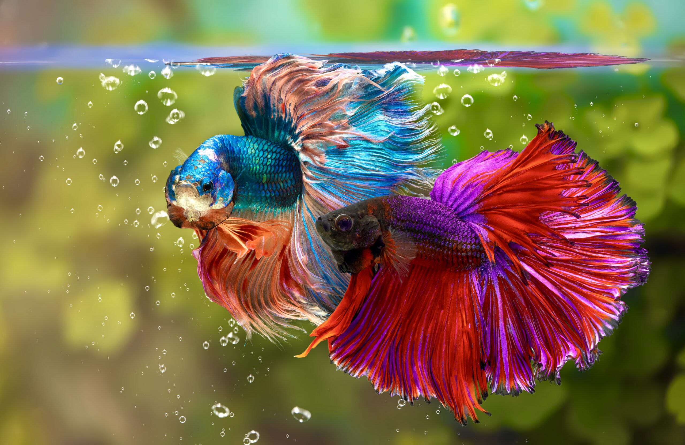
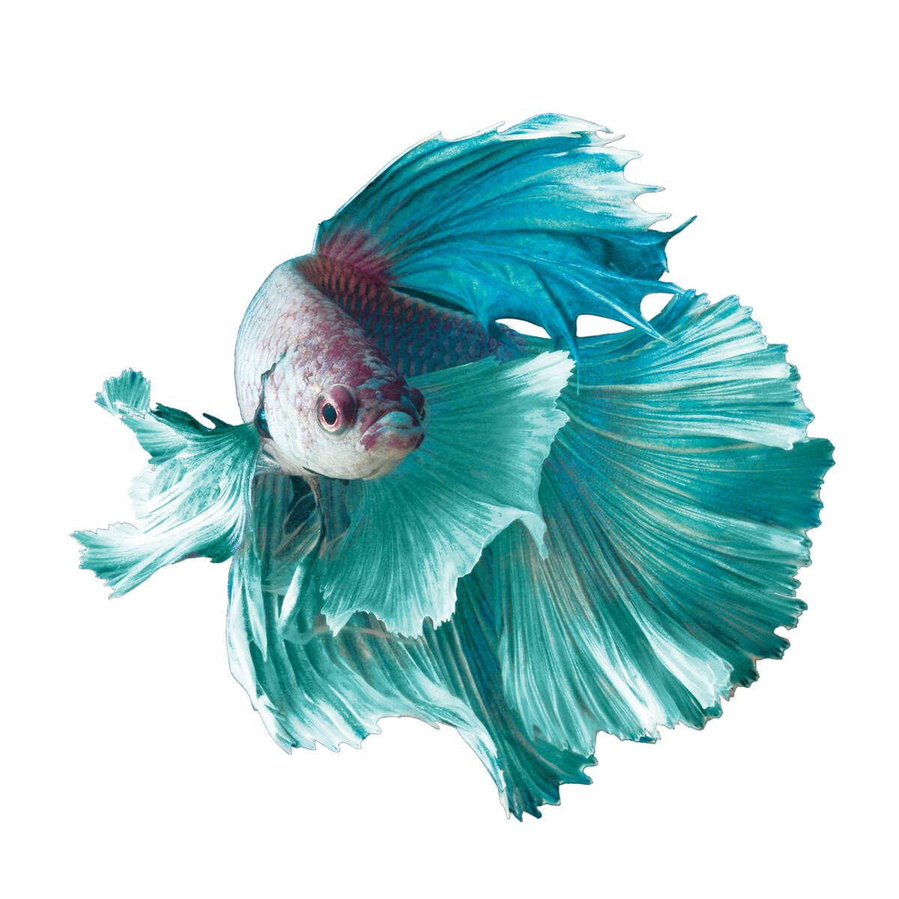
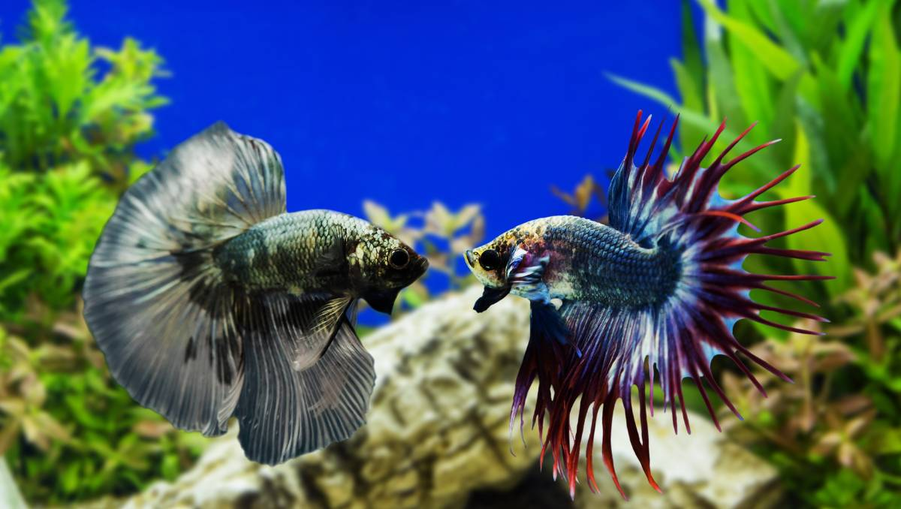
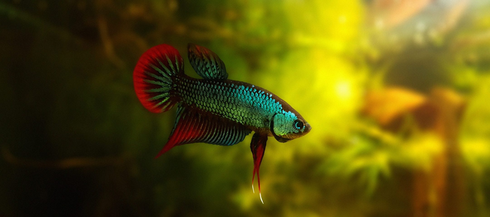

Siamese fighting fish
Betta fish, commonly referred to as Siamese fighting fish, are one of the most popular fish breeds. With its jewel-toned coloring and flowing fins, betta fish are a great addition to any fish-lover's home. Not all betta fish fight—only the males. Female bettas can be kept together. Despite how they are often sold, bettas should not be kept in a fish bowl. Bettas are happiest when kept in water that is soft, warm, with a neutral to slightly acidic pH.
Bettas originate in the shallow waters of Thailand (formerly called Siam, hence their name), Indonesia, Malaysia, Vietnam, and parts of China. These areas are home to rice paddies, ponds, slow-moving streams, and swamps, all of which are home to bettas. Today bettas have been introduced into many locations, giving rise to non-native populations in a number of countries.
 The brilliant coloration and long flowing fins of the male betta make it one of the most well known of aquarium fish. Females are usually not as highly colored and have much shorter fins. In nature, this species is not usually brightly colored. However, captive breeding programs have resulted in a wide variety of colors, including white, yellow, orange, red, pink, blue, green, turquoise, brown, and black. A myriad of combinations can be seen, from solid colors to those with different fin and body colors, to patterned colors. Fin types have also changed due to selective breeding. Veil tails have been joined by crown tails, deltas, fans, half moons, lyre, and split tails, to name a few. Both sexes have a torpedo-shaped body and an upturned mouth geared for eating at the surface. Mature adults reach a size of two to three inches, with females being slightly smaller than the males. A unique feature of this species is the presence of a labyrinth organ that allows them to take oxygen from the atmosphere instead of from water, thus allowing them to survive in low-oxygen pools.
